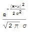
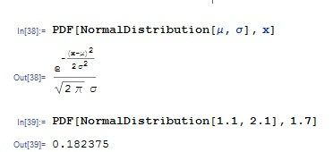
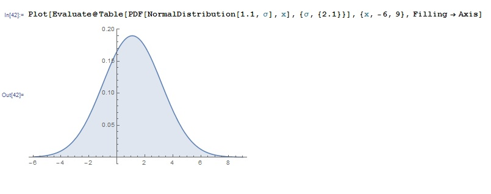
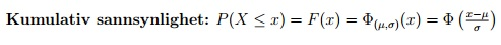
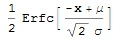
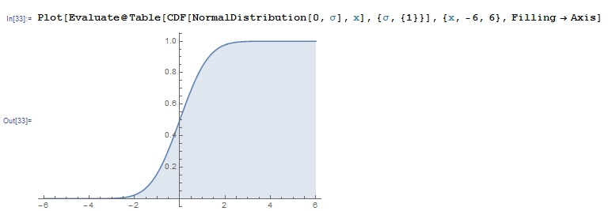
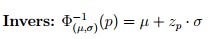
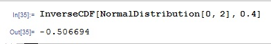
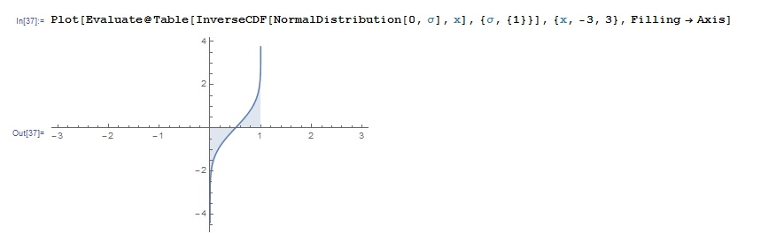

Normalfordelingen Nμ, σ (x) Definisjon: Sannsynlighetsfordeling Nμ, σ (x) ƒ=φ
1. Skriv som innput
In[1]:= PDF[NormalDistribution[μ, σ], x]
Out[1]=
In[2]:= PDF[NormalDistribution[μ-verdi, σ-verdi], x-verdi eller x1, x2]
Eksempel:

3. For å tegne grafen skriv
In[4]:=Plot[Evaluate@ Table[PDF[NormalDistribution[μ, σ], x], {μ, μ-verdi/verdier}eller {σ, σ-verdi/verdier}], {x, x-verdi/verdier}, Filling -> Axis]
Ta gjerne større x-verdier enn angitt slik at du kan se mønster på grafen Eksempel:

Definisjon: Kumulativ sannsynlighet Nμ, σ F=Φ

1. Skriv som innput
In[1]:= CDF[NormalDistribution[μ, σ], x]
Out[1]=
In[2]:= CDF[NormalDistribution[μ-verdi, σ-verdi], x-verdi eller x1, x2]
3. Hadde du flere x-verdier og fikk flere resultater gi dem navn og trekk resultat x1 fra resultat x2
In[3]:={p1, p2} ={resultat x1, resultat x2}
Eksempel:4. Det kan tegnes grafen ved å skrive
In[4]:=Plot[Evaluate@ Table[CDF[NormalDistribution[μ, σ], x], {μ, μ-verdi/verdier}eller {σ, σ-verdi/verdier}], {x, x-verdi/verdier}, Filling -> Axis]
Ta gjerne større x-verdier enn angitt slik at du kan se mønster på grafen Eksempel:

Definisjon ( zα den inverse til Φ):

zα beregning:
1. Skriv
In[1]:= InverseCDF[NormalDistribution[μ, σ], x]
Eksempel:

2. Tegn gjerne grafen ved å skrive
In[2]:=Plot[Evaluate@ Table[InverseCDF[NormalDistribution[μ, σ], x], {μ, μ-verdi/verdier}eller {σ, σ-verdi/verdier}], {x, x-verdi/verdier}, Filling -> Axis]
